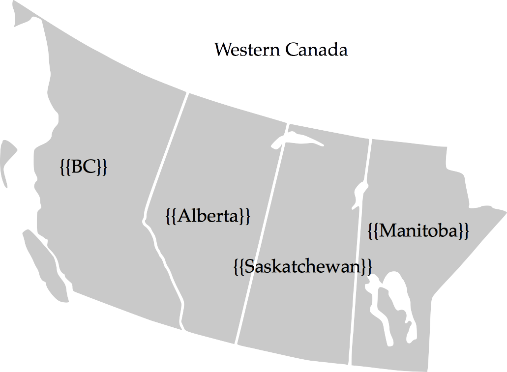
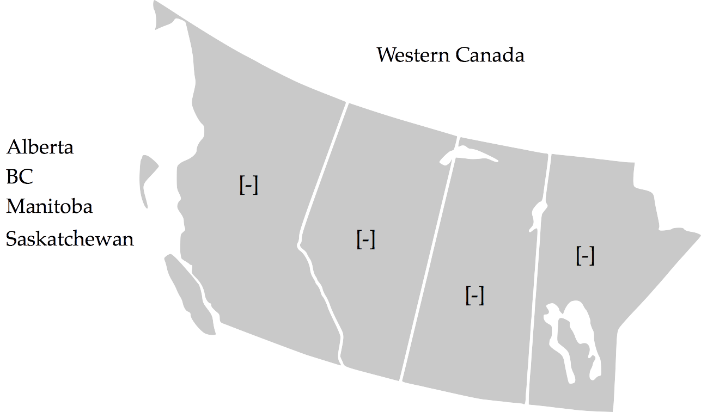

Wanted: A Tool for Figure Labeling Exercises
I’d like to be able to do the following:
Step 1: Create a simple SVG diagram, some of whose labels are marked with {{…}} or something similar:

Step 2: Include that diagram in a web page, giving it a special class.
Step 3: Include a small JavaScript library in the same web page (not shown).
Step 4: When the page loads, the JS looks for SVGs that have the magic class and transforms them so that:
- All the specially-marked text is pulled over to one side and displayed without the
{{…}}delimiters. (Any undelimited text is left where it was.) - Markers are put in the figure to show where the delimited text was.

Step 5: The person viewing the page can now drag labels from the side and drop them on the markers to re-label the diagram. (If they change their mind about where a label should go, they can re-drag it as many times as they want.)
Step 6: When they’re done, the library can compare the diagram they’ve reconstructed against the original and determine whether all the labels are in the right place.
This tool would let instructors create many different kinds of exercises,
since Parsons Problems and “match things in Column A with things in Column B” are just special cases of “put these bits of text in the right places”.
More importantly,
it would let people who aren’t programmers create them:
Anyone who can use a drawing tool capable of exporting SVG would just have to remember to include the {{…}} delimiters
(or whatever the tool author chooses to use).
If you’re interested in helping to build this,
please give me a shout.